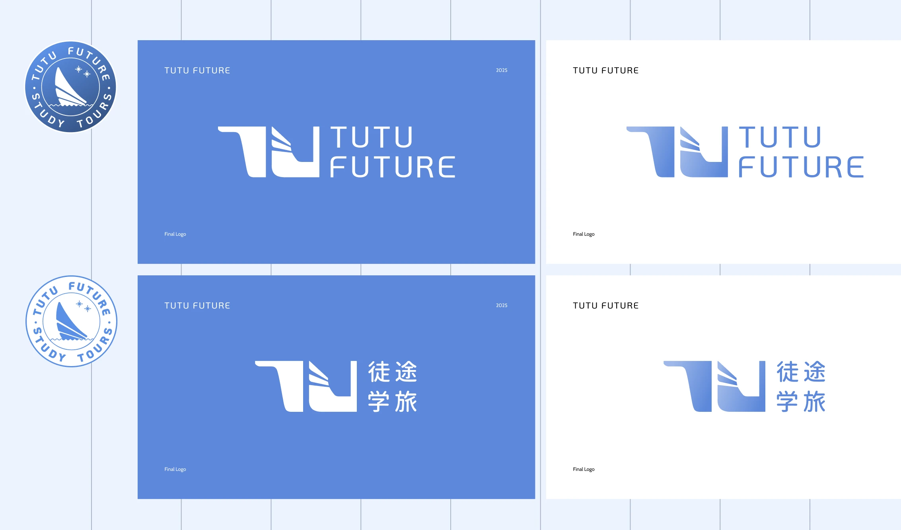
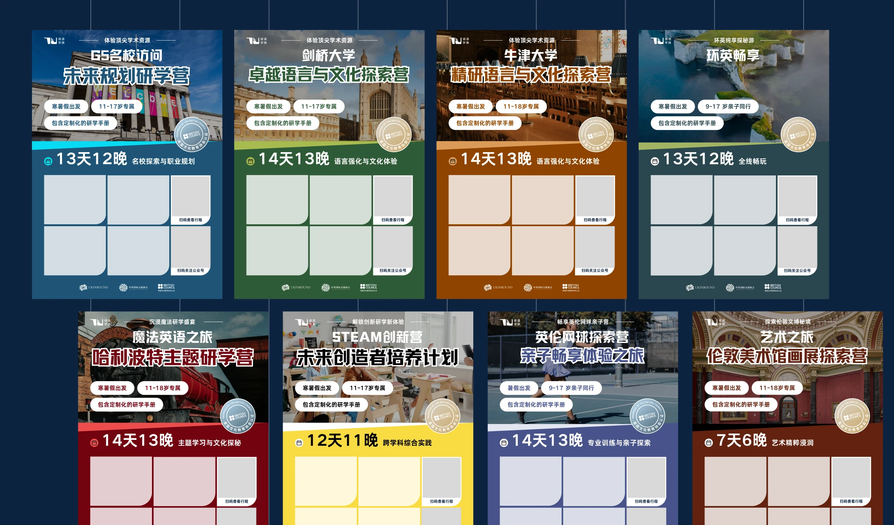
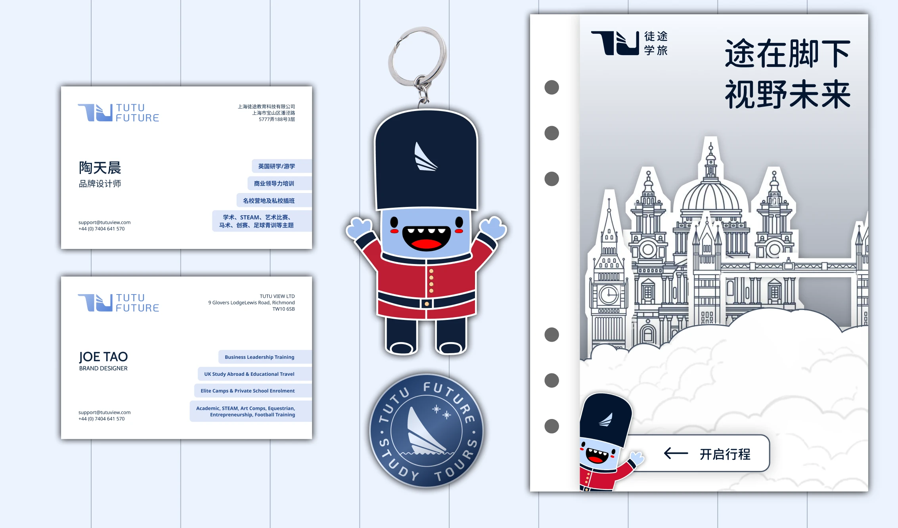

2025
Reposition study travel beyond hiking trips
TUTU Future is a Chinese study tour operator for students exploring short-term programmes in Europe. The company had started with an outdoors-led identity, but its offer had grown into academic courses, art workshops, STEM activities, language immersion, cultural trips, and city-based learning.
I led a 6-week brand refresh across logo direction, bilingual identity, colour system, programme treatments, mascot usage, and campaign templates. The goal was to give the team a system that could explain a wider education-travel offer without losing the warmth of the original brand.
Problem statement
Because the brand still communicated hiking and outdoor travel, students interested in art, STEM, language, or city culture could not immediately see themselves in the offer, which made the widened product range harder to sell.
1 — Widen the meaning of exploration
The first move was to stop treating exploration as only physical adventure. For TUTU Future, exploration could also mean a museum visit, a language classroom, a lab session, a city walk, or a student's first independent trip abroad.
This gave the rebrand a clear direction: keep the curiosity and movement of the original identity, but remove the dependence on literal hiking symbols.
From a business perspective, the brand needed to help the team present a wider portfolio without making each new programme feel like a separate company.

2 — Move from a single-purpose logo to a broader identity
The old identity worked for outdoor study trips, but it narrowed the brand too quickly. I redesigned the visual direction around a more flexible education-travel position, using the logo, bilingual lockup, and supporting graphics to balance academic credibility with student-facing energy.
The design decision was not to make the brand more corporate. It was to make it less trapped by one activity type.
The identity still needed to feel approachable for students and parents, but it also needed enough range to sit across academic, cultural, and creative programmes.
3 — Build campaign assets the team could reuse
Once the core identity was clearer, I extended it into templates for social campaigns, posters, business cards, and mascot-led touchpoints.
The system had to be practical for a small team: clear enough to reuse, flexible enough for different programme themes, and distinctive enough to avoid every trip looking the same.
From a business perspective, this reduced the need to redesign from scratch for every new offer. Art, language, STEM, culture, and outdoor programmes could each have their own emphasis while still belonging to one brand family.



Delivery and results
The final system gave TUTU Future a clearer way to package its broader study-travel portfolio. Instead of forcing every programme back into an outdoors image, the team had a visual language that could flex by programme type while keeping one recognisable identity.
The most useful outcome was not a single logo change. It was a reusable brand system that helped the business describe what it had become: a wider education-travel platform for students, not just a hiking-trip organiser.
So what?
This project was about brand fit, not decoration. A visual identity can quietly limit what a company is allowed to sell if it keeps pointing to an older version of the offer.
For TUTU Future, the work made the widened product range easier to see, easier to market, and easier for the team to keep extending.